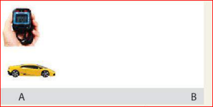
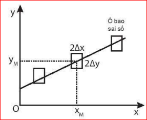

"Không một phép đo nào có thể cho ta giá trị đúng của đại lượng cần đo, mọi phép đo đều có sai số. Làm thế nào để xác định được các sai số này? Nguyên nhân gây ra các sai số là gì và cách khắc phục như thế nào?"
Phép đo trực tiếp: Đo trực tiếp một đại lượng bằng dụng cụ đo, kết quả được đọc trực tiếp trên dụng cụ đo được gọi là phép đo trực tiếp.
Phép đo gián tiếp: Đo một đại lượng không trực tiếp mà thông qua công thức liên hệ với các đại lượng có thể đo trực tiếp gọi là phép đo gián tiếp.
Em hãy lập phương án đo tốc độ chuyển động của chiếc xe ô tô đồ chơi chỉ dùng thước; đồng hồ bấm giây và trả lời các câu hỏi sau:
Hướng dẫn giải:
Khi sử dụng dụng cụ đo để đo các đại lượng vật lí luôn có sự sai lệch do đặc điểm và cấu tạo của dụng cụ gây ra. Sự sai lệch này gọi là sai số dụng cụ hoặc sai số hệ thống.
Sai số hệ thống có nguyên nhân khách quan (do dụng cụ), nguyên nhân chủ quan do người đo (cần loại bỏ).
Khi lặp lại các phép đo, ta nhận được các giá trị khác nhau, sự sai lệch này không có nguyên nhân rõ ràng nên gọi là sai số ngẫu nhiên, có thể do thao tác đo không chuẩn, điều kiện làm thí nghiệm không ổn định hoặc hạn chế về giác quan,...
Khắc phục: Người ta thường tiến hành thí nghiệm nhiều lần và tính sai số.
⚠️ Lưu ý quan trọng:
Sai số gây bởi dụng cụ sử dụng đo thường lấy bằng một nửa độ chia nhỏ nhất (ĐCNN) trên dụng cụ (ví dụ thước đo chiều dài có độ chia nhỏ nhất là 1 mm thì sai số dụng cụ là 0,5 mm), hoặc được ghi trực tiếp trên dụng cụ do nhà sản xuất xác định.
• Giá trị trung bình khi đo n lần: \(\overline{A} = \frac{A_1 + A_2 + ... + A_n}{n}\)
• Sai số ngẫu nhiên tuyệt đối của từng lần đo: \(\Delta A_1 = |\overline{A} - A_1|; \Delta A_2 = |\overline{A} - A_2|; ...; \Delta A_n = |\overline{A} - A_n|\)
• Sai số ngẫu nhiên tuyệt đối trung bình của n lần đo: \(\overline{\Delta A} = \frac{\Delta A_1 + \Delta A_2 + ... + \Delta A_n}{n}\)
• Sai số tuyệt đối của phép đo: \(\Delta A = \overline{\Delta A} + \Delta A_{dc}\) (với \(\Delta A_{dc}\) là sai số dụng cụ).
• Sai số tỉ đối của phép đo: \(\delta A = \frac{\Delta A}{\overline{A}} \cdot 100\%\) (biểu thị mức độ chính xác của phép đo).
• Quy tắc tổng hoặc hiệu: Sai số tuyệt đối của một tổng hay hiệu bằng tổng các sai số tuyệt đối của các số hạng.
Nếu \(A = B + C\) hoặc \(A = B - C\) thì \(\Delta A = \Delta B + \Delta C\)
• Quy tắc tích hoặc thương: Sai số tỉ đối của một tích hay thương thì bằng tổng các sai số tỉ đối của các thừa số.
Nếu \(A = B \cdot C\) hoặc \(A = \frac{B}{C}\) thì \(\delta A = \delta B + \delta C\)
Từ sai số tỉ đối \(\delta A\), ta dùng công thức \(\Delta A = \delta A \cdot \overline{A}\) để tính ngược lại sai số tuyệt đối.
Kết quả đo đại lượng \(A\) được ghi dưới dạng một khoảng giá trị: \(A = \overline{A} \pm \Delta A\) hoặc \((\overline{A} - \Delta A) \le A \le (\overline{A} + \Delta A)\)
• \(\Delta A\) thường viết đến số chữ số có nghĩa tới đơn vị của độ chia nhỏ nhất (ĐCNN).
• Giá trị trung bình \(\overline{A}\) được viết đến bậc thập phân tương ứng với \(\Delta A\).
Quy tắc làm tròn số:
- Nếu chữ số ở hàng bỏ đi nhỏ hơn 5 thì chữ số bên trái giữ nguyên.
- Nếu chữ số hàng bỏ đi lớn hơn hoặc bằng 5 thì chữ số bên trái tăng thêm một đơn vị.
Cách xác định sai số tỉ đối của một tích hay một thương khi các đại lượng có lũy thừa:
Nếu \(A = B \cdot \sqrt{C}\) thì \(\delta A = \delta B + \frac{1}{2}\delta C\)
Hoạt động thực hành thí nghiệm:
Dùng một thước có ĐCNN là 1 mm và một đồng hồ đo thời gian có ĐCNN 0,01 s để đo 5 lần thời gian chuyển động của chiếc xe đồ chơi chạy bằng pin từ điểm A (\(v_A=0\)) đến điểm B.

Hình 3.1. Thí nghiệm đo tốc độ

Hình 3.2. Biểu diễn sai số bằng đồ thị (Ô bao sai số)
| Lần đo (n) | \(s\,(m)\) | \(\Delta s\,(m)\) | \(t\,(s)\) | \(\Delta t\,(s)\) |
|---|---|---|---|---|
| 1 | ... | ... | ... | ... |
| 2 | ... | ... | ... | ... |
| 3 | ... | ... | ... | ... |
| 4 | ... | ... | ... | ... |
| 5 | ... | ... | ... | ... |
| Trung bình | \(\overline{s} = ...\) | \(\overline{\Delta s} = ...\) | \(\overline{t} = ...\) | \(\overline{\Delta t} = ...\) |
Lời giải & Hướng dẫn phân tích:
a) Nguyên nhân gây sai khác: Do phản xạ bấm đồng hồ của người đo giữa các lần không đều nhau; do vị trí đặt mắt đọc thước lệch góc; hoặc do lực cản, ma sát trên đường chạy dao động nhẹ.
b) Sai số dụng cụ: \(\Delta s_{dc} = 0,5\text{ mm} = 0,0005\text{ m}\) và \(\Delta t_{dc} = 0,005\text{ s}\) (Bằng một nửa ĐCNN).
c) Viết kết quả đo: \(s = \overline{s} \pm \Delta s\) ; \(t = \overline{t} \pm \Delta t\).
d) Tốc độ gián tiếp: Áp dụng quy tắc thương \(\delta v = \delta s + \delta t = \frac{\Delta s}{\overline{s}} + \frac{\Delta t}{\overline{t}}\), sau đó tính được \(\Delta v = \delta v \cdot \overline{v}\).
Bài 1 (Dạng tổng/hiệu): Một học sinh đo độ dài hai đoạn thẳng liên tiếp thu được kết quả \(L_1 = 15,3 \pm 0,1\text{ cm}\) và \(L_2 = 12,5 \pm 0,2\text{ cm}\). Hãy tính tổng chiều dài hai đoạn thẳng trên và viết kết quả đo chuẩn.
Lời giải:
Biểu thức tính tổng chiều dài: \(L = L_1 + L_2\)
• Giá trị trung bình: \(\overline{L} = \overline{L}_1 + \overline{L}_2 = 15,3 + 12,5 = 27,8\text{ cm}\).
• Sai số tuyệt đối tổng áp dụng quy tắc tổng: \(\Delta L = \Delta L_1 + \Delta L_2 = 0,1 + 0,2 = 0,3\text{ cm}\).
• Viết kết quả đo: \(L = 27,8 \pm 0,3\text{ cm}\).
Bài 2 (Dạng tích/thương): Thí nghiệm đo chuyển động thẳng đều của một vật cho kết quả quãng đường \(s = 20,0 \pm 0,4\text{ m}\) và khoảng thời gian chạy tương ứng \(t = 4,0 \pm 0,1\text{ s}\). Hãy xác định sai số tỉ đối của phép đo tốc độ và tính sai số tuyệt đối của tốc độ đó.
Lời giải:
Biểu thức tính tốc độ: \(v = \frac{s}{t}\)
• Giá trị trung bình của tốc độ: \(\overline{v} = \frac{\overline{s}}{\overline{t}} = \frac{20,0}{4,0} = 5,0\text{ m/s}\).
• Sai số tỉ đối của v áp dụng quy tắc thương:
\(\delta v = \delta s + \delta t = \left(\frac{\Delta s}{\overline{s}} + \frac{\Delta t}{\overline{t}}\right) \cdot 100\% = \left(\frac{0,4}{20,0} + \frac{0,1}{4,0}\right) \cdot 100\% = (2\% + 2,5\%) = 4,5\%\).
• Sai số tuyệt đối của tốc độ v:
\(\Delta v = \delta v \cdot \overline{v} = 4,5\% \cdot 5,0 = 0,225\text{ m/s}\).
Làm tròn đến cùng số chữ số có nghĩa thập phân tương ứng: \(\Delta v \approx 0,2\text{ m/s}\).
• Kết quả đo tốc độ: \(v = 5,0 \pm 0,2\text{ m/s}\).
Bài 3 (Dạng lũy thừa nâng cao): Để xác định diện tích một tấm bìa hình vuông, người ta đo độ dài cạnh và thu được kết quả \(a = 10,0 \pm 0,1\text{ cm}\). Hãy tính sai số tỉ đối và sai số tuyệt đối của diện tích tấm bìa trên.
Lời giải:
Diện tích tấm bìa hình vuông có biểu thức: \(S = a^2 = a \cdot a\)
• Giá trị trung bình của diện tích: \(\overline{S} = \overline{a}^2 = (10,0)^2 = 100,0\text{ cm}^2\).
• Sai số tỉ đối áp dụng quy tắc tích lũy thừa:
\(\delta S = \delta a + \delta a = 2\delta a = 2 \cdot \left(\frac{\Delta a}{\overline{a}}\right) \cdot 100\% = 2 \cdot \left(\frac{0,1}{10,0}\right) \cdot 100\% = 2 \cdot 1\% = 2\%\).
• Sai số tuyệt đối của diện tích S:
\(\Delta S = \delta S \cdot \overline{S} = 2\% \cdot 100,0 = 2,0\text{ cm}^2\).
• Kết quả phép đo diện tích: \(S = 100,0 \pm 2,0\text{ cm}^2\).